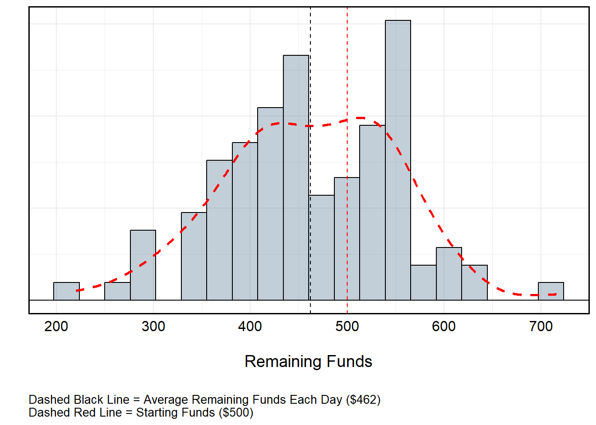

Number Generation and Loops
POS6933: Computational Social Science
Truscott (Spring 2026)
Number Generation
R provides remarkable flexibility for randomly
generating integers across a variety of distributions. Assuming I want
to generate 1000 values at random, I can use many of R’s
built-in functionality to do so:
set.seed(1234) # Random Seed
uniform <- runif(1000, min = 0, max = 10) # Uniform Distribution
normal <- rnorm(1000, mean = 0, sd = 1) # Standard Normal (Mean = 0, SD = 1)
exponential <- rexp(1000, rate = 1) # Exponential Distribution (Rate = 1)
poisson <- rpois(1000, lambda = 3) # Poisson Distribution (Count)
binomial <- rbinom(1000, size = 10, prob = 0.5) # Bernoulli Distribution
geometric <- rgeom(1000, prob = 0.3) # Geometric Distribution
negative_binomial <- rnbinom(1000, size = 5, prob = 0.4) # Negative Binomial
chi_sq <- rchisq(1000, df = 4) # Chi-Square Distribution (4 Degrees of Freedom)
students_t <- rt(1000, df = 5) # Students T (5 DF)
Note: Red lines illustrate theoretical distribution given
parameters.
Additional Note Re: Random Number Generation
In R, random number generation isn’t truly random.
Rather, they’re pseudo-random, meaning they use a deterministic
algorithm to produce a sequence of numbers that appear random. A
seed is the starting point for that algorithm. When you
call set.seed(1234), you are initializing the random number
generator with a specific value. This ensures that every time you use
the same seed, the sequence of “random” numbers R produces
will be exactly the same – perfect for reproducibility!
Loops
In R, a for loop is a control structure used to repeat a
block of code a fixed number of times, iterating over a sequence of
values. The basic syntax is:
for (variable in sequence){
repeating code routine
}where variable takes on each value in sequence one at a
time, and the code inside the curly braces executes for each
iteration.
for loops are useful when you need to perform repetitive
tasks, such as computing multiple summaries, filling a vector, or
generating plots for several datasets. For example, imagine I wanted to
print the squared integer of every value between 1 and 5. Rather than
individually entering {value}^5 to the console, I could
simply iterate for each value:
for (i in 1:5){
print(i^2)
}## [1] 1
## [1] 4
## [1] 9
## [1] 16
## [1] 25The syntax of these loops are fairly straightforward.Here,
i takes on the value associated with each iteration. During
the first pass, it will assume the value of 1. On the second pass, it
will assume the value 2 – so on and so forth until it reaches the
terminal value of 5.
R is also able to assume various syntax for assuming
ranges of alphanumeric values. Here’s just a few examples:
values <- seq(10, 100, by = 10) # Values 10 to 100 by 10
print(values)## [1] 10 20 30 40 50 60 70 80 90 100values <- c(10:20) # Values 10 to 20 (Inclusive)
print(values)## [1] 10 11 12 13 14 15 16 17 18 19 20values <- seq(1, 100, by = 1) # All Values 1 to 100 (Inclusive)
for (i in values){
if (i %% 10 == 0){
print(i)
}
} # For Each Value in `values', if i is neatly divisible by 10, print i## [1] 10
## [1] 20
## [1] 30
## [1] 40
## [1] 50
## [1] 60
## [1] 70
## [1] 80
## [1] 90
## [1] 100values <- c('a', 'b', 'c', 'd', 'f')
for (i in 1:length(values)){
print(values[i])
} # For Each Value in Values, Print the Value Indexed values[i]## [1] "a"
## [1] "b"
## [1] "c"
## [1] "d"
## [1] "f"Simulating Normal Distribution
I could even bake the syntax of for loops into random
number generation to significantly increase my efficiency in modeling
distributions. Let’s imagine I want to visualize the capacity for
repeated sampling to best mimic a standard normal distribution where
\(\mu\) = 50 and \(\sigma\) = 5. Using a for
loop, I can cycle different sampling rates to answer this question:
results <- data.frame() # Empty Dataframe to Store Output
samples <- c(10, 100, 1000, 10000) # Vector of Integers
for (i in 1:length(samples)){
temp_sample_size <- samples[i] # Recovers the i-th value of the samples vector
temp_run <- rnorm(temp_sample_size, mean = 50, sd = 5) # Run
temp_run <- data.frame(sample_size = temp_sample_size,
value = temp_run) # Create Temporary dataframe indicating size of samples and values from rbinom()
results <- bind_rows(results, temp_run) # Export to 'results' data.frame
}
summary(results) # Print Summary## sample_size value
## Min. : 10 Min. :29.37
## 1st Qu.:10000 1st Qu.:46.55
## Median :10000 Median :50.00
## Mean : 9092 Mean :49.98
## 3rd Qu.:10000 3rd Qu.:53.36
## Max. :10000 Max. :68.64results %>%
mutate(sample_size = factor(sample_size)) %>%
ggplot(aes(x = value)) +
geom_density(aes(fill = sample_size), alpha = 1/3) +
stat_function(fun = dnorm, args = list(mean = 50, sd = 5),
color = "red", linewidth = 1.2) +
labs(x = '\nValue',
y = 'Density\n',
fill = 'Sample Size',
caption = 'Note: Red Line Indicates Normal Distribution (μ = 50, σ = 5)') +
geom_hline(yintercept = 0) +
geom_vline(xintercept = 50, linetype = 2) +
facet_wrap(~paste0(sample_size, ' Samples')) +
scale_x_continuous(breaks = seq(35, 65, 5)) +
theme_minimal() +
theme(panel.border = element_rect(linewidth = 1, colour = 'black', fill = NA),
axis.text = element_text(size = 12, colour = 'black'),
axis.title = element_text(size = 14, colour = 'black'),
strip.background = element_rect(linewidth = 1, colour = 'black', fill = 'grey75'),
strip.text = element_text(size = 12, colour = 'black'),
legend.position = 'none',
plot.caption = element_text(hjust = 0.5)) Games of Chance Example (Roulette)
Roulette Over Time (With Funds Replacement)
I could even usefor loops to simulate games of chance. For
example, a standard American roulette wheel has 38 slots:
- 18 Red
- 18 Black
- 2 Green

However, to only play the colors at a 1-1 payout (i.e., receiving a payout equal to your initial bet) means I can only select Black or Red, each of which have a 0.47% (18⁄38) probability of being selected from any independent spin. Let’s say I played 50 times, each time selecting from among Black or Red. I only have one rule: If I win, I place the same bet as before. If I lose, I play the other color. If I begin with $500 and bet the table minimum ($10), what might I be expected to finish with if I visit 100 times and play 100 spins each time?
set.seed(1234) # Set Initial Seed
seeds <- sample(1:1000, size = 100, replace = FALSE) # Random Seeds
roulette_values <- c(rep("red", 18), rep("black", 18), rep("green", 2)) # Roulette Wheel
games <- c() # Empty Vector to Store Winnings (Losses...)
for (i in 1:length(seeds)){
temp_seed <- seeds[i] # Recover Temporary Seed
set.seed(temp_seed) # Set Temporary Seed
available_colors <- c('red', 'black') # Available Roulette Colors
remaining_funds <- 500 # Starting Money
current_color <- 'red' # Starting with Red
for (spin in 1:100){
temp_spin <- sample(roulette_values, size = 1, replace = T) # Spin!
if (temp_spin == current_color){
remaining_funds <- remaining_funds + 10 # Win :D
current_color = current_color # Keep Color
} else {
remaining_funds <- remaining_funds - 10 # Loss :(
current_color = sample(available_colors[which(!available_colors == current_color)], size = 1, replace = T)
# If Loss -- Remove $10 and Change Color to Other from Remaining Options
}
}
games <- c(games, remaining_funds) # Export Remaining Funds
}
Roulette Over Time (No Funds Replacement)
All told, I’d lose about $40 per day. This isn’t particularly “bad” at a local level, but over time this might be detrimental. So, what if I changed the rules such that instead of restarting with $500 each day, I assume the value of the day before? Suddenly, the gravity of the losses become evident. The reason for this is actually pretty straightforward: Recall that the probability of winning playing the colors (Black or Red) is not truly 50-50. Rather, the introduction of 0 and 00 for a standard American wheel gives the house a distinct odds advantage.
set.seed(1234) # Set Initial Seed
seeds <- sample(1:1000, size = 100, replace = FALSE) # Random Seeds
roulette_values <- c(rep("red", 18), rep("black", 18), rep("green", 2)) # Roulette Wheel
games <- c() # Empty Vector to Store Winnings (Losses...)
for (i in 1:length(seeds)){
temp_seed <- seeds[i] # Recover Temporary Seed
set.seed(temp_seed) # Set Temporary Seed
available_colors <- c('red', 'black') # Roulette Colors
remaining_funds <- ifelse(i == 1, 500, games[i-1]) # Starting Money (500 or Previous Start if i > 1)
current_color <- 'red' # Starting with Red
for (spin in 1:100){
temp_spin <- sample(roulette_values, size = 1, replace = T) # Spin!
if (temp_spin == current_color){
remaining_funds <- remaining_funds + 10 # Win :D
current_color = current_color # Keep Color
} else {
remaining_funds <- remaining_funds - 10 # Loss :(
current_color = sample(available_colors[which(!available_colors == current_color)], size = 1, replace = T)
# If Loss -- Remove $10 and Change Color to Other from Remaining Options
}
}
games <- c(games, remaining_funds) # Export Remaining Funds
}We can even calculate the expected value of (let’s say) a $1 bet when accounting for the house advantage. Recall that betting Black or Red incurs an 18⁄38 odds of winning. The odds of the alternative color or Green is 20⁄38. This would mean that:
\[ \text{Expected Value of \$1 Bet } = 1 \cdot \frac{18}{38} + (-1) \cdot \frac{20}{38} \\ = \frac{18 - 20}{38} \\ = -\frac{2}{38} \\ \approx -0.0526 \] Each time a bet is made, the house will retain about a 5 percent advantage. This may seem small, but even a “small” edge is huge when multiplied over hundreds or thousands of bets. A player might win some, but the casino always profits in the aggregate.
James Bond Strategy
So what if I switched to picking numbers instead? We can also use
R to simulate the James Bond strategy – a “flat betting
system” (i.e., one that is repeated every iteration without alteration)
that systematically accounts for 25 of the 38 numbers on the board with
different betting amounts. While it doesn’t counteract the house edge,
it does technically redistribute the risk. Assuming the table minimum is
$20, your bet is allocated accordingly:
| Bet Type | Amount | Numbers Covered | Payout Odds | Net Outcome if Hit |
|---|---|---|---|---|
| High numbers (19–36) | $14 | 18 numbers | 1:1 | +$8 |
| Six-line (13–18) | $5 | 6 numbers | 5:1 | +$10 |
| Straight-up (0, 00) | $0.50 each (total $1) | 2 numbers | 35:1 | -$2 |
| All others (1–12) | — | 12 numbers | — | -$20 |
Let’s set up a similar routine as before to simulate how much money James is winning or losing – Recall this does not change the house odds.
set.seed(1234) # Set Initial Seed
seeds <- sample(1:1000, size = 100, replace = FALSE) # Random Seeds
roulette_values <- as.character(c(1:36, "0", "00")) # Roulette Wheel
bond_wins <- as.character(c(19:36, 13:18, "0", "00")) # Numbers Where James Wins
bets <- c(
rep(14, 18), # 19–36
rep(5, 6), # 13–18
rep(0.5, 2) # 0 and 00
) # Bets Associated with Numbers
payouts <- c(
rep(8, 18), # 19–36: +$8 net
rep(10, 6), # 13–18: +$10 net
rep(-2, 2) # 0 and 00: -$2 net
) # Payouts
bond_payouts <- data.frame(
number = bond_wins, # Numbers
bet = bets, # Bet Values
payout = payouts, # Associated Payouts
stringsAsFactors = F
) # Dataframe to Return Payouts for Winning Numbers # Numbers Where James Wins
games <- c() # Empty Vector to Store Winnings (Losses...)
for (i in 1:length(seeds)){
temp_seed <- seeds[i] # Recover Temporary Seed
set.seed(temp_seed) # Set Temporary Seed
remaining_funds <- ifelse(i == 1, 500, games[i-1]) # Starting Money (500 or Previous Day if i > 1)
for (spin in 1:100){
temp_spin <- sample(roulette_values, size = 1, replace = T) # Spin!
if (temp_spin %in% bond_wins){
temp_payout <- bond_payouts$payout[bond_payouts$number == temp_spin] # Return Temp Payout
remaining_funds <- remaining_funds + temp_payout # Apply Win :D
} else {
remaining_funds <- remaining_funds - 20 # Apply Full $20 Loss :(
}
}
games <- c(games, remaining_funds) # Export Remaining Funds
}Turns out James’ watered-down cocktails didn’t help in the long run.